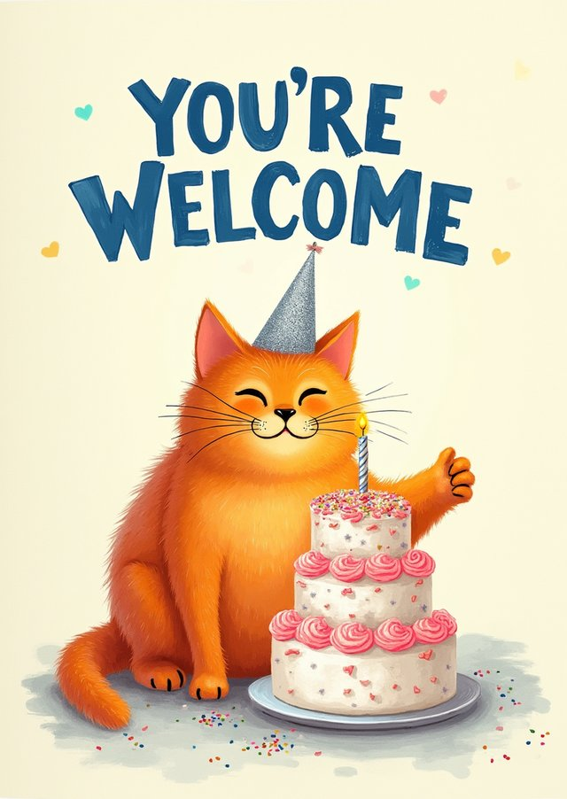

The pipeline was worth building.
Four conditions, forty cards each, all scored by the same judge.
Naive prompting means asking the image model directly, with no brief
and no adapter. The gap between that and the full pipeline is the
largest effect in the study.
-
Naive prompt
Lettering and a border. No idea behind it.
-

Pipeline
A joke, and a picture that carries it.
-
 Pipeline, best of eight
The card at the top of this page.
Pipeline, best of eight
The card at the top of this page.
-
Sold on a marketplace
Someone else's dinosaur, listed for sale.
One card per condition, all four for the same occasion. The two on
the right landed on the same joke without being asked to, which is
less of a coincidence than it looks: dinosaur puns are all over the
scraped corpus, and that corpus is what the adapter learned from.
-
Naive prompt
0.624
-
Pipeline
0.685
-
Pipeline, best of eight
0.707
-
Sold on a marketplace
0.692
Judged purchase intent, mean over 40 cards. The bars run from 0.60 to
0.72, not from zero.
These are model judgements, not sales.
Every commercial field in the scraped corpus came back empty, so
nothing here was ever checked against what people bought.
Picking the best of eight did not help.
This is the result I expected least and trust most. Generating eight
cards and letting the appeal model choose one is statistically
equivalent to generating a single card and keeping it. It is the one
finding that holds under every judge tested.
The reason turned up when I measured how different the eight
candidates actually are. A batch spans about 42 per cent of the
spread you see across the scraped market, and a selector cannot pick
out a difference that is not there. It is the same reason the reveal
above is a coin toss on any single visit.
The statistical form of that claim
Equivalence was tested rather than inferred from a null result,
because failing to find a difference is not the same as showing
there is none. Two one sided tests at a margin of 0.02 on the
judge's scale, rank based to match the other contrasts. The
location shift between one candidate and best of eight is 0.0054
by the Hodges Lehmann estimate, well inside the margin. The margin
itself is asserted, not derived: no study of card buying tells you
what difference would matter commercially, so the thesis reports
the verdict across a range of margins instead of defending one.
Whether it matches the cards already on sale depends on who is asked.
The judge that produced the training labels also scored the final
cards, which is circular, so every card was scored again by two
judges from other model families. The headline survives in a weaker
form than I would have liked.
No judge rated the pipeline below the human reference. Whether the
two count as statistically equivalent depends on the judge: two of
the three support it, the third puts the pipeline above.
-
The reporting judge
A < B < D < C
Produced the training labels too, which is why the other two
exist. Spreads the conditions widest.
-
A second family
A < D < B < C
Puts both pipeline conditions above the marketplace cards, and
compresses everything into a narrow band.
-
A third family
A < D < B < C
Agrees on the shape, disagrees on the level. Rates the naive
cards lowest of anyone.
A is the naive prompt, B the pipeline, C the pipeline with
reranking, D the cards pulled from marketplace listings.
Where the judges disagree
All three agree on the two things the study turns on: naive
prompting is worst, reranking is not worth it. They agree far less
about individual cards. Rank correlation between any two judges,
card by card, runs from 0.41 to 0.65. So a single card's score is
substantially a matter of which judge you asked, while the
comparison between conditions is not. That is a normal pattern in
evaluation work rather than a defect, but it does put a ceiling on
how much any one number here deserves to be trusted.
All five dimensions
The aesthetic row is the one to be careful with. Roughly 70 per cent
of the marketplace card images carry mockup framing and some
carry seller watermarks, and the judge scores that furniture along
with the design. Every image was capped at the same resolution before
scoring so the generated cards had no size advantage, but the framing
could not be normalised away. Read that row as a comparison of
photographs, not of card designs.